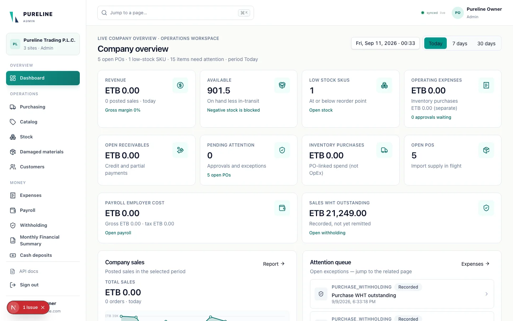
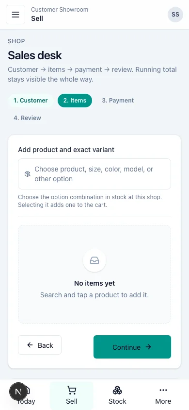

Business systems
CRM & inventory platform
A shared operations workspace for importers and distributors: purchasing, warehouse stock, shop sales, and controlled transfers.

Stock workspace from the project’s user guide, using seeded demonstration data. Pureline is the demonstration configuration.
01 · My contribution
I co-developed and tested inventory and stock management systems with the Pinnacle AI team. The CRM platform is one example of that work. Alongside development, I helped translate business requirements into scope and coordinated design and engineering.
02 · The problem & the people
Import and trading businesses need to follow goods from purchasing into warehouse stock, through transfers to shops, and into sales. Owners need a cross-branch picture; warehouse and shop staff need a focused workspace for their own responsibilities.
The CRM brings those workflows into a configurable multi-branch application. Organization settings control branches, currency, product options, and approval rules instead of tying the product to a single company.
03 · What the team implemented
- An owner/admin workspace and branch-restricted employee operations, with dedicated warehouse and shop surfaces.
- Product catalogs with option groups and stock-tracked variants; stock balances, movement history, low-stock views, and counts.
- Purchase orders and receiving, warehouse-to-shop transfers, discrepancy review, and approval decisions.
- Sales posting, customer records, expenses, and operational reporting.
- In-app receipt and transfer alerts, with an optional Telegram notification outbox.
04 · Frontend, API & database
Next.js App Router pages use React and TypeScript with Tailwind and shared UI components. Forms use React Hook Form and Zod; same-origin Route Handlers connect browser actions to domain logic and PostgreSQL RPCs.
Supabase Auth verifies users on the server. Organization membership, branch grants, and permissions are checked beyond the navigation layer. PostgreSQL row-level security scopes business records, while private storage uses signed uploads.
Stock changes are posted through transactional document workflows rather than direct edits to displayed balances. An immutable ledger retains movement history; corrections use linked reversals. Realtime subscriptions refresh operational views.
05 · Technical challenge: reliable stock writes
Receiving, transferring, and selling can affect the same stock at the same time. Retrying a request must not post the movement twice. The source addresses this with PostgreSQL transactions, balance-row locks, and idempotency keys that return the prior result for a replay.
This keeps critical stock rules close to the database, at the cost of maintaining SQL workflows alongside TypeScript. It is the team’s documented system approach.
06 · Technical challenge: branch visibility
A documented RLS correction requires access to every non-null endpoint of a stock movement. Checking either end alone could expose warehouse information to a shop user after a transfer. A migration tightens the policy, and a regression test checks the rule.
The tradeoff is stricter visibility for cross-branch movements. The system must provide each user with the information needed for their job without exposing another branch’s restricted records.
07 · Testing, deployment & current limits
I contributed to development and testing. The repository contains Vitest domain and validation tests, schema and API-contract checks, and Playwright workflows for owner, warehouse, and shop workspaces. These are documented test assets, not a claim that the entire CRM suite was rerun for this portfolio review.
The current source describes a local wired MVP, with Vercel and Supabase configuration and Sentry instrumentation. Production provisioning and operational checks remain pending. Offline device sync and several advanced inventory features are deferred; this version is a web application, with no verified native mobile companion.
My earlier CV records co-development and deployment of 2–3 inventory systems at Pinnacle. That historical experience is separate from the deployment status of this current CRM version.


Verified tools & methods
- Next.js
- React
- TypeScript
- Supabase / PostgreSQL
- Tailwind CSS
- Zod
Related links & evidence
Implementation verified in the locally supplied CRM source, README, migrations, tests, and user guide. Source is maintained under PinnXAI/crm-platform; no public source or system demo is confirmed. The agency link is company context, not an inventory-system demo.